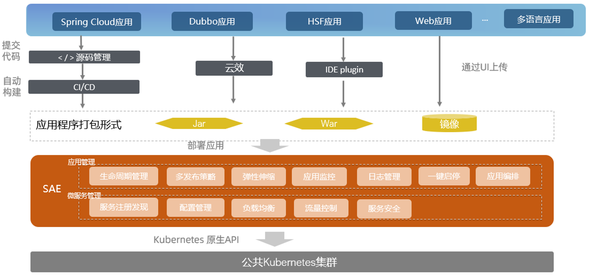
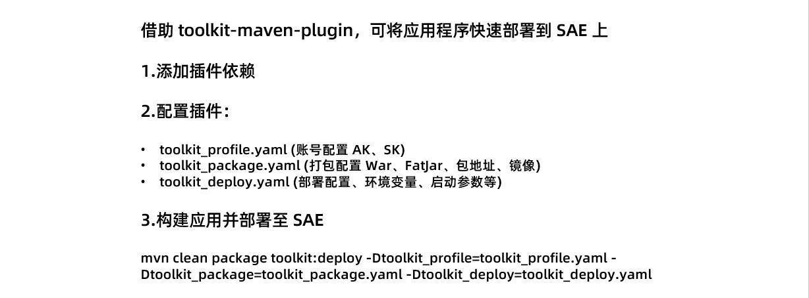
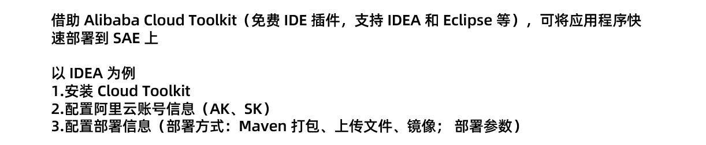

- 01 架构的演进.md
- 02 Serverless 的价值.md
- 03 常见 Serverless 架构模式.md
- 04 Serverless 技术选型.md
- 05 函数计算简介.md
- 06 函数计算是如何工作的？.md
- 07 函数粘合云服务提供端到端解决方案.md
- 08 函数计算的开发与配置.md
- 09 函数的调试与部署.md
- 10 自动化 CI&CD 与灰度发布.md
- 11 函数计算的可观测性.md
- 12 典型案例 1：函数计算在音视频场景实践.md
- 13 典型案例 3：十分钟搭建弹性可扩展的 Web API.md
- 14 Serverless Kubernetes 容器服务介绍.md
- 15 Serverless Kubernetes 应用部署及扩缩容.md
- 16 使用 Spot 低成本运行 Job 任务.md
- 17 低成本运行 Spark 数据计算.md
- 18 GPU 机器学习开箱即用.md
- 19 基于 Knative 低成本部署在线应用，灵活自动伸缩.md
- 20 快速构建 JenkinsGitlab 持续集成环境.md
- 21 在线应用的 Serverless 实践.md
- 22 通过 IDEMaven 部署 Serverless 应用实践.md
- 23 企业级 CICD 工具部署 Serverless 应用的落地实践.md
- 24 Serverless 应用如何管理日志&持久化数据.md
- 25 Serverless 应用引擎产品的流量负载均衡和路由策略配置实践.md
- 26 Spring CloudDubbo 应用无缝迁移到 Serverless 架构.md
- 27 SAE 应用分批发布与无损下线的最佳实践.md
- 28 如何通过压测工具+ SAE 弹性能力轻松应对大促.md
- 29 SAE 极致应用部署效率.md
22 通过 IDEMaven 部署 Serverless 应用实践
SAE 应用部署方式
1. SAE 概述

首先，简单介绍一下 SAE。SAE 是一款面向应用的 Serverless PaaS 平台，支持 Spring Cloud、Dubbo、HSF 等主流开发框架，用户可以零代码改造直接将应用部署到 SAE，并且按需使用、按量计费、秒级弹性。SAE 充分发挥 Serverless 的优势，为用户节省闲置资源成本；在体验上，SAE 采用全托管、免运维的方式，用户只需聚焦核心业务的开发，而应用生命周期管理、微服务管理、日志、监控等功能交由 SAE 完成。
2. SAE 应用部署方式

在使用 SAE 时，您可以在控制台上看到 SAE 支持三种部署方式，即可以通过 WAR 包、JAR 包和镜像的方式进行部署，如果您采用 Spring Cloud、Dubbo、HSF 这类应用，可以直接打包上传，或者填入包的地址便可以部署到 SAE 上；对于非 Java 语言的场景，您也可以使用镜像直接来部署，后续我们也会支持其他语言直接上传包的形式进行部署。
SAE 除上述控制台界面部署的方式之外，还支持通过 Maven 插件或者 IDE 插件的方式进行部署，这样您无需登录控制台，就可以执行自动化部署操作，同时可以集成如云效、Jenkins 等工具实现 CICD 流程。
Maven 插件部署

如何使用 Maven 插件进行部署？首先需要为应用添加 Maven 依赖 toolkit-maven-plugin，接下来需要编写配置文件来配置插件的具体行为，这里定义了三个配置文件：
- toolkit_profile.yaml 账号配置文件，用来配置阿里云 ak、sk 来标识阿里云用户，这里推荐使用子账号 ak、sk 以降低安全风险。
- toolkit_package.yaml 打包配置文件，用来声明部署应用的类型，可以选择 war、jar、url 以及镜像的方式来进行部署，若采用 war、jar 的方式，则会将当前应用进行打包上传，而 url 或者镜像的方式则要显示的填写对应的包地址或者镜像地址进行部署。
- toolkit_deploy.yaml 部署配置，即可以配置该应用的环境变量、启动参数、健康检查等内容，这与控制台上的配置选项是一致的。
这三个文件都有对应的模板，具体的模板选项可以查看产品文档，接下来通过运行 Maven 打包部署命令 mvn clean package toolkit:deploy 即可自动化部署到 SAE 上。
IDE 插件部署

再看一下如何通过您的 IDE 直接进行部署，这个是借助 Alibaba Cloud Toolkit IDE 插件的能力，它可以在主流的 Java IDE IDEA 和 Eclipse 上面安装，这里以 IDEA 为例，您可以在 IDEA 插件市场中搜索并安装。之后重启 IDEA 后即可看到 Cloud Toolkit 的选项。下面我们要做的配置和刚才的 Maven 插件部署的配置比较类似，先要配置阿里云账号信息，即 ak、sk。接下来选择部署到 SAE 这个选项，里面有多种部署方式：Maven 打包、上传文件、镜像，同时在高级选项中可以配置应用的环境变量、启动参数、健康检查等内容。
总结
相信您通过本文已经了解了 SAE 的几种部署方式和基本使用，在这里也推荐您选用 SAE，在不改变当前开发运维方式的同时，享受 Serverless 技术带来的价值。
相关文档：
通过 Maven 插件自动部署应用 通过 IntelliJ IDEA 插件部署应用 通过 Eclipse 插件一键部署应用
课程推荐
为了更多开发者能够享受到 Serverless 带来的红利，这一次，我们集结了 10+ 位阿里巴巴 Serverless 领域技术专家，打造出最适合开发者入门的 Serverless 公开课，让你即学即用，轻松拥抱云计算的新范式——Serverless。
点击即可免费观看课程：https://developer.aliyun.com/learning/roadmap/serverless
© 2019 - 2023 Liangliang Lee. Powered by gin and hexo-theme-book.